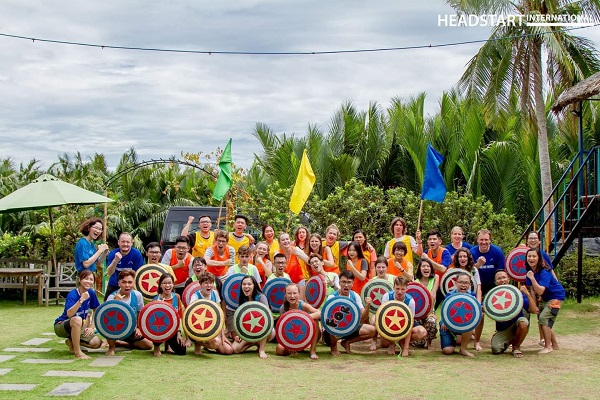

<!DOCTYPE html>
<!--
To change this license header, choose License Headers in Project Properties.
To change this template file, choose Tools | Templates
and open the template in the editor.
-->
<html>
    <head>
        <title>_ntnc_</title>
        <meta charset="UTF-8">
        <meta name="viewport" content="width=device-width, initial-scale=1.0">
        <!--        <style>
                    p{
                        margin-left: 15%;
                        margin-right: 15%;
                        font-size: 130%;
                        
                    }
                    img{
                        margin-left: 20%;
                    }
                </style>-->
    </head>
    <body>
        
        <div style="background-color: black;">
            
        </div>
        
        
<!--        <div>Content here</div>

       <p style="margin-left: 15%;margin-right: 15%;
           font-size: 130%;margin-top: 5%;">
            This is my first trip to Danang, Hoi An. This is an international 
            summer camp, including friends from around the world such as Belgium,
            Slovakia, and friends from the south, little uk sai gon. I and some 
            of you are from little uk Hanoi. I got to know and apply the scholarship 
            to attend this program from Headstart Vietnam, I was awarded a 100% 
            scholarship, so I only had to pay a ticket fee when traveling.
            <br/><br/>
            
			<br/><br/>
			7-day summer camp program with lots of interesting activities for all
            members to explore Danang, Hoi An and learn more about Vietnamese culture, 
            the first day we visited the pottery village and got molding products made
            by myself. It was really interesting. On the second day we visited the 
            vegetable growing village and saw how farmers grow vegetables to produce 
            clean vegetables and supply them to the city. This place is really peaceful
            and beautiful, we and our international friends took photos under a confetti 
            garden, really memorable.
            <br/><br/>
            
			<br/><br/>
            The next day, we went to experience Son Tra peninsula, here, we saw 
            the city of Da Nang from above, very beautiful and majestic. Here we 
            discover one of the most beautiful places and almost no one knows. 
            We went through the jungle and finally got to a place, inexpressible,
            it was a kind of natural swimming pool, completely created by nature,
            located right on the coast, very clear water. and cool, i just want 
            to bathe here forever
            <br/><br/>
            
			<br/><br/>
            The next day, we visited the island of Cu Lao Cham, from the mainland
            to the island not too far, we traveled by motorboat, feeling very excited. 
            Here we have great seafood dishes. Scuba diving to see corals, the sea
            here is very clear and clean, we even see the bottom. The beach is wonderful, 
            white sand, there are rows of coconuts on the shore. everything was perfect, 
            at night, we had an EDM music party, sound, light, we danced on the beach, it 
            was an unforgettable day for us.
            <br/><br/>
            
			<br/><br/>
            Finally, we visit the ancient town of Hoi An, this is a street in 
            Quang Nam province, built from ancient times and still preserved to 
            this day. There are many delicious dishes such as chicken rice, an hoi an. 
            The streets and houses here still retain the ancient features for hundreds
            of years. A special feature in Hoi An is the lantern. Every night, thousands 
            of colorful lanterns illuminate the streets of Hoi An. The streets and houses
            were shimmering at nightfall.
            <br/><br/>
            
			<br/><br/>
            This trip was really interesting and left me with many beautiful memories of 
            friendship, love, this year, due to the impact of the covid epidemic and isolation,
            we cannot welcome international students. However, I will still miss the moments we
            used to have together
            <br/><br/>
        </p>-->

    </body>
</html>
